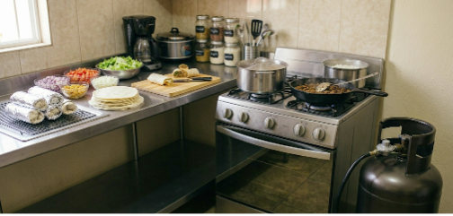
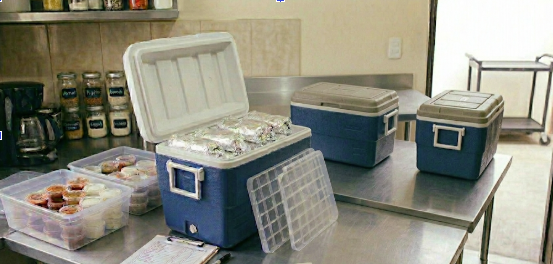
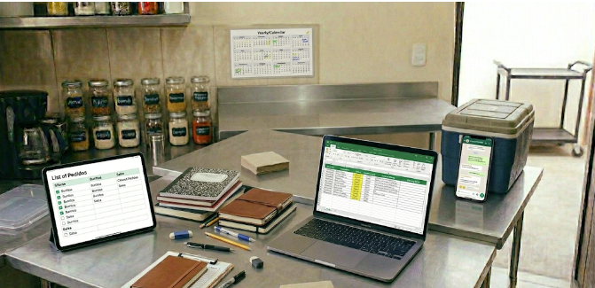
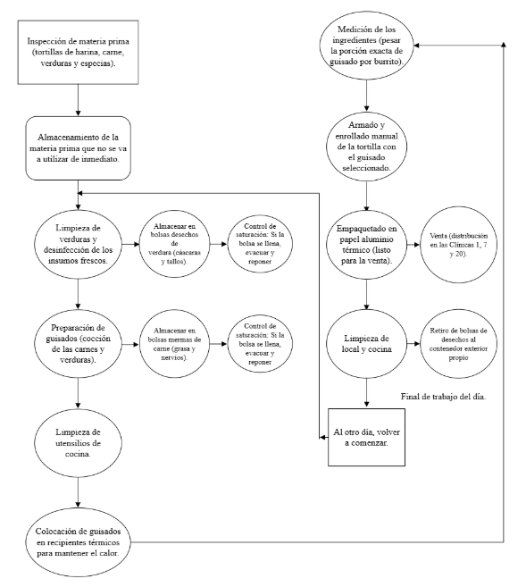

La tecnología en Enrollate es básica y accesible. Se utilizan estufa, tanque de gas, sartenes y ollas para la cocción y preparación de carnes, arroz, frijoles y complementos. Estos equipos aseguran una producción eficiente y en tiempos adecuados para el emprendimiento.

Para la conservación y transporte, se utilizan recipientes y una hielera que mantiene la temperatura de los burritos. Esta herramienta es clave para facilitar el traslado a los hospitales, conservando la calidad del producto hasta su venta.

Enrollate optimiza su gestión mediante el uso de herramientas digitales móviles y plataformas de mensajería instantánea. Estos recursos facilitan la comunicación interna, la administración de pedidos y la coordinación logística en los puntos de venta, garantizando una operativa ágil y eficiente sin incurrir en costos de sistemas complejos.


El proceso comienza con la inspección y el almacenamiento de la materia prima, seguido de la limpieza y desinfección de vegetales, donde se gestionan los desechos y su evacuación. Posteriormente, se elaboran los guisados mediante la cocción de carnes y verduras, manteniendo un control sobre las mermas y residuos generados. Una vez listos, los alimentos se resguardan en recipientes térmicos tras la limpieza de los utensilios utilizados. Para garantizar la calidad, se pesa cada porción con una báscula gramera antes del armado y enrollado manual de la tortilla. Finalmente, el producto se empaca en papel aluminio térmico al momento del pedido para su venta en las clínicas 1, 7 y 20, concluyendo la jornada con la limpieza general del local y el retiro de desechos para reiniciar el ciclo al día siguiente.
Nuestro equipo de mantenimiento preventivo y correctivo asegura el funcionamiento óptimo de todas las máquinas y equipos. Realizamos inspecciones diarias, calibraciones mensuales y reparaciones programadas para evitar interrupciones en la producción. Utilizamos protocolos estandarizados y capacitamos continuamente a nuestro personal para mantener altos estándares de seguridad y eficiencia operativa.